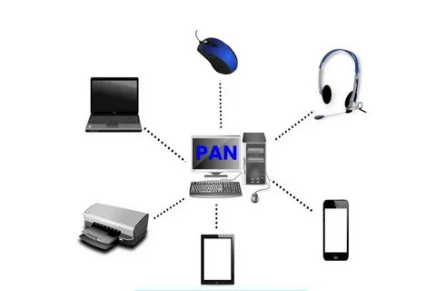

PAN(Personal Area Network)персональная сеть. Данная сеть проводит соединение между персональным компьютером и вспомогательным оборудованием. В состав вспомогательного оборудования могут входить игровые консоли, наушники,музыкальное оборудование и другие компьютеры. Но отличием от других компьютерных сетей является то, что радиус связи внутри этой сети осуществляется в пределах 30 метров и может связать до 8 устройств.
